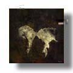
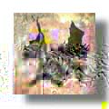
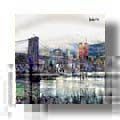
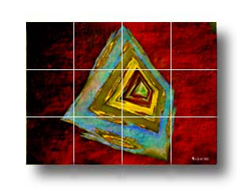

Sublimated Tiles




Not to be compared to fired ceramics, sublimated tiles have a long life, and authentically and colorfully recapitulate the image.
These tiles were produced by a so-called sublimation process which imbeds a print of the art
onto a ceramic tile by means of a heat press generating temperatures
to 500 degees F. (Sublimation transfers the ink from solid
to gas without going through the liquid stage).
For use as decorative art.
Not for sale.